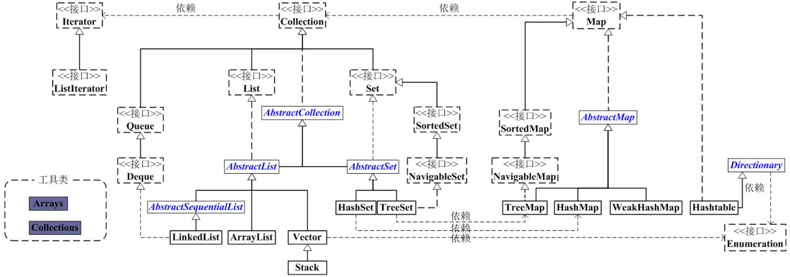
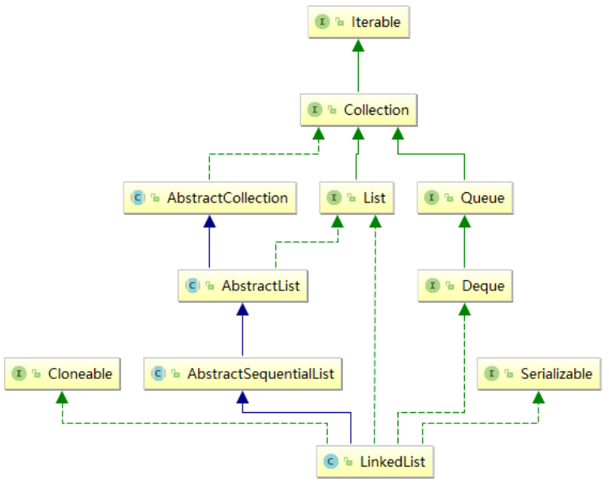
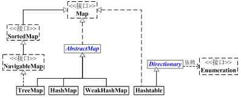
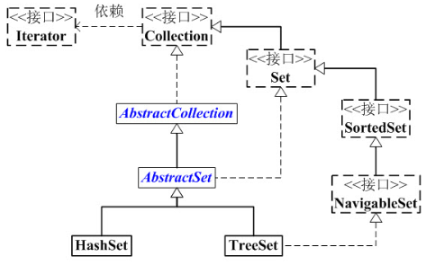

[toc]
序言 java作为一门为面向对象而生的语言，与cpp有着巨大的不同（比如万物皆“引用”）。利用java解决算法竞赛题目，在高精度、字符串处理、封装增强复用性等方面较cpp有优势。在ACM中若想用java替代cpp解决题目，理应对继承、多态、垃圾回收、自动打包解包机制，以及面对对象思想有基本的理解。
首先希望你对 java 基础有一定了解（比如对象判等要用.equals），本章更多的是深究 jdk API 中哪些对于 ACM 有优势。
IO java中的输入输出流多带有一种”管道”的概念。
标准输入输出 标准输入输出的最简洁写法主要依靠两个类：Scanner、System。Scanner在java.util包，需要手动导入，System在java.lang包，会自动导入。
1 2 3 4 5 6 7 8 9 10 11 12 13 14 15 16 17 18 19 20 21 22 23 24 25 26 27 28 29 30 31 32 33 34 35 36 37 38 39 40 41 42 43 Scanner sc = new Scanner(System.in); int a = sc.nextInt();int a = sc.nextInt(2 ); long b = sc.nextLong(); long b = sc.nextLong(2 ); double d = sc.nextDouble();String s = sc.next(); String ss = sc.nextLine(); BigInteger = sc.nextBigInteger(); BigInteger = sc.nextBigInteger(2 ); BigDecimal = sc.nextBigDecimal(); while (sc.hasNext()) { int a = sc.nextInt(); } int a = sc.nextInt(), b = sc.nextInt();String s = sc.nextLine(); int a = sc.nextInt(), b = sc.nextInt(); sc.nextLine(); String s = sc.nextLine(); System.out.println("121212" ); System.out.print("213213" ); System.out.printf("%d" , 123 ); String input = "1 fish 2 fish red fish blue fish" ; Scanner sc = new Scanner(input).useDelimiter("\\s*fish\\s*" ); System.out.println(sc.nextInt()); System.out.println(sc.nextInt()); System.out.println(sc.next()); System.out.println(sc.next()); sc.skip(StringOfRegex);
格式化输出 格式化输出，大多针对小数的保留几位小数的输出。利用printf像cpp一样格式化输出，二是利用DecimalFormat对象。
1 2 3 4 5 System.out.printf("%d %10.5f\n" , 1 , 3.4 ); DecimalFormat df = new DecimalFormat("0.000" ); System.out.println("x = " + df.format(1.2345 ));
快速IO 快速IO，如同cpp一样，是预先将输入读到缓冲区，模拟读入。
1 2 3 4 5 6 7 8 9 10 11 12 13 14 15 16 17 18 19 20 21 22 23 24 25 public class Main static BufferedReader in=new BufferedReader(new InputStreamReader(System.in)); static StringTokenizer tok; static String next () return tok.nextToken(); } static String nextLine () try {return in.readLine();}catch (Exception e) {return null ;}} static long nextLong () return Long.parseLong(next());} static int nextInt () return Integer.parseInt(next());} static PrintWriter out=new PrintWriter(new OutputStreamWriter(System.out)); static boolean hasNext () { while (tok==null ||!tok.hasMoreTokens()) try {tok=new StringTokenizer(in.readLine());}catch (Exception e){return false ;} return true ; } public static void main (String[] args) { int a = nextInt(); String s = nextLine(); out.println(s); out.flush(); } }
1 2 3 4 5 6 7 8 9 10 11 12 13 14 15 16 17 18 19 20 21 22 23 24 25 26 27 28 29 public class Main public static void main (String[] args) throws IOException { out.flush(); out.close(); } static FastReader in = new FastReader(); static PrintWriter out = new PrintWriter(System.out); static class FastReader { private InputStream mIs;private byte [] buf = new byte [1024 ];private int curChar,numChars;public FastReader () this (System.in); }public FastReader (InputStream is) public int read () if (numChars == -1 ) throw new InputMismatchException();if (curChar >= numChars) {curChar = 0 ;try { numChars = mIs.read(buf);} catch (IOException e) { throw new InputMismatchException();}if (numChars <= 0 ) return -1 ; }return buf[curChar++];} public String nextLine () int c = read();while (isSpaceChar(c)) c = read();StringBuilder res = new StringBuilder();do {res.appendCodePoint(c);c = read();}while (!isEndOfLine(c));return res.toString() ;} public String next () int c = read();while (isSpaceChar(c)) c = read();StringBuilder res = new StringBuilder();do {res.appendCodePoint(c);c = read();}while (!isSpaceChar(c));return res.toString();} public long l () int c = read();while (isSpaceChar(c)) c = read();int sgn = 1 ;if (c == '-' ) { sgn = -1 ; c = read() ; }long res = 0 ; do { if (c < '0' || c > '9' ) throw new InputMismatchException();res *= 10 ; res += c - '0' ; c = read();}while (!isSpaceChar(c));return res * sgn;} public int i () int c = read() ;while (isSpaceChar(c)) c = read();int sgn = 1 ;if (c == '-' ) { sgn = -1 ; c = read() ; }int res = 0 ;do {if (c < '0' || c > '9' ) throw new InputMismatchException();res *= 10 ; res += c - '0' ; c = read() ;}while (!isSpaceChar(c));return res * sgn;} public double d () throws IOException return Double.parseDouble(next()) ;} public boolean isSpaceChar (int c) return c == ' ' || c == '\n' || c == '\r' || c == '\t' || c == -1 ; } public boolean isEndOfLine (int c) return c == '\n' || c == '\r' || c == -1 ; } public void scanIntArr (int [] arr) for (int li=0 ;li<arr.length;++li){ arr[li]=i();}} public void scanLongArr (long [] arr) for (int i=0 ;i<arr.length;++i){arr[i]=l();}} public void shuffle (int [] arr) for (int i=arr.length;i>0 ;--i) { int r=(int )(Math.random()*i); int temp=arr[i-1 ]; arr[i-1 ]=arr[r]; arr[r]=temp; } } } }
重定向IO 1 2 3 4 5 6 7 8 9 10 11 12 13 14 15 16 17 18 19 20 21 22 static Scanner sc;static { sc = new Scanner("in.txt" ); try { System.setOut(new PrintStream("out.txt" )); } catch (FileNotFoundException e) { System.exit(0 ); } } static BufferedReader in;static PrintWriter out;static { try { in = new BufferedReader(new InputStreamReader(new FileInputStream("in.txt" ))); out = new PrintWriter(new OutputStreamWriter(new FileOutputStream("out.txt" ))); } catch (FileNotFoundException e) { System.exit(0 ); } }
Integer 基本数据类型的包装类中，包含对进制的处理方法、字符串到整型的转换。这里仅拿Integer作范例，Long、Short、Boolean、Double理应有相应的用法。
进制相关 对于进制转换通过10进制为中介，理应可以处理任意进制间的转换。
1 2 3 4 5 6 7 8 9 10 11 12 13 14 15 16 17 18 19 Integer.toString(111 , 16 ); Integer.valueOf("FFFF" , 16 ) Integer.valueOf("776" , 8 ) Integer.valueOf("010101" , 2 ) Integer.toBinaryString(12 ); Integer.toOctalString(12 ); Integer.toHexString(12 ); Integer.bitCount(7 ); Integer.highestOneBit(11 ); Integer.lowestOneBit(11 ); Integer.numberOfLeadingZeros(12 ); Integer.numberOfTrailingZeros(12 ); Integer.reverse(12 ); Integer.reverseByte(12 ); Integer.rotateLeft(12 , 2 ) Integer.rotateRight(12 , 2 )
类型转换 1 2 int a = Integer.parseInt("12345" ); long b = Long.parseLong("233333333333333" );
Character 基本数据类型 char 的包装类，主要使用其对字符的判断方法、以及case转换。
1 2 3 4 5 6 7 8 Character.isDigit('1' ); Character.isLetter('a' ); Character.isLetterOrDigit('1' ); Character.isLowerCase('a' ); Character.isUpperCase('A' ); Character.isWhitespace(' ' ); Character.toUpperCase('a' ); Character.toLowerCase('A' );
Math 数学库
1 2 3 4 5 6 7 8 9 10 11 12 13 14 15 16 17 18 19 20 21 22 23 24 25 26 27 28 29 30 31 32 33 34 35 36 Math.abs(double a) Math.max(a, b) Math.min(a, b) Math.sin(double a) Math.tan(double a) Math.sqrt(double a) Math.sinh(double x) Math.tanh(double x) Math.toDegrees(double angrad) Math.toRadians(double angdeg) Math.acos(double a) Math.asin(double a) Math.atan(double a) Math.atan2(double y, double x) Math.cbrt(double a) Math.ceil(double a) Math.copySign(double magnitude, double sign) Math.copySign(float magnitude, float sign) Math.cos(double a) Math.cosh(double x) Math.exp(double a) Math.expm1(double x) Math.floor(double a) Math.getExponent(double d) Math.getExponent(float f) Math.hypot(double x, double y) Math.log(double a) Math.log10(double a) Math.log1p(double x) Math.nextAfter(double start, double direction) Math.nextUp(double d) Math.pow(double a, double b) Math.rint(double a) Math.round(double a) Math.scalb(double d, int scaleFactor) Math.signum(double d)
Random 伪随机数
1 2 3 4 5 6 7 8 9 10 11 12 13 14 15 16 17 18 19 20 21 22 23 24 Math.random() Random rand = new Random(); Random rand = new Random(aValueOfLong); rand.nextInt(); rand.nextInt(3 ); rand.nextInt(18 )-3 ; rand.nextLong(); rand.nextBoolean(); rand.nextDouble(); rand.nextDouble()*1.5 +1 ; int [] result = new int [k];for (int i = 0 ; i < result.length; i++) { int idx = (int ) (Math.random() * n); result[i] = numbers[idx]; numbers[idx] = numbers[n-1 ]; n--; }
BigInteger 高精度整数
1 2 3 4 5 6 7 8 9 10 11 12 13 14 15 16 17 18 19 20 21 22 23 24 25 26 27 28 29 30 31 32 33 34 35 36 37 38 39 40 41 42 43 44 45 46 47 48 49 50 51 52 53 54 55 56 57 58 59 60 61 62 63 64 65 BigInteger bigI1 = new BigInteger("123124" ); BigInteger bigI2 = BigInteger.valueOf(1234L ); long i1 = bigI1.longValue(); BigInteger.ONE、BigInteger.ZERO、BigInteger.TEN bigI1 = bigI1.multiply(bigI2); System.out.println(bigI1); bigI1.divide(bigI2); bigI1.remainder(bigI2); bigI1.divideAndRemainder(bigI2); bigI1.pow(bigI2); System.out.println(bigI1.equals(bigI2)); System.out.println(bigI1.compareTo(bigI2)); BigInteger.valueOf(1 +2 +4 ).bitCount(); BigInteger.valueOf(-1 -2 -4 ).bitCount(); BigInteger.valueOf(1 +2 +4 ).bitLength(); BigInteger.valueOf(1 +2 +4 ).clearBit(3 ); BigInteger.valueOf(1 +2 +4 ).flipBit(3 ); BigInteger.valueOf(1 +2 +4 ).getLowestSetBit(); bigI1 = bigI1.and(bigI2); bigI1 = bigI1.andNot(bigI2); bigI1 = bigI1.or(bigI2); bigI1 = bigI1.xor(bigI2); bigI1 = bigI1.not(); bigI1.abs(); bigI1.negate(); bigI1.gcd(bigI2); bigI1.isProbablePrime(); bigI1.isProbablePrime(certainty); bigI1.modInverse(m); bigI1.modPow(n,mod); bigI1.nextProbablePrime(); BigInteger.probablePrime(int bitLength, Random rnd) new BigInteger("4123" , 5 ).toString(30 ); private static final class MultiplyTask extends RecursiveTask <BigInteger > private final BigInteger b1, b2; public MultiplyTask (BigInteger b1, BigInteger b2) this .b1 = b1; this .b2 = b2; } protected BigInteger compute () return b1.multiply(b2); } } MultiplyTask mt1 = new MultiplyTask(xh, yh); mt1.fork(); BigInteger p2 = xl.multiply(yl); BigInteger p1 = mt1.join();
BigDecimal 高精度浮点数
没写完，留坑！
1 2 3 4 5 6 7 8 9 10 11 12 13 14 15 16 17 18 19 20 21 22 23 24 25 26 27 28 29 30 31 32 33 34 35 36 37 38 39 40 41 42 43 44 45 46 47 48 49 50 51 52 53 54 55 56 57 58 59 60 61 62 63 64 65 66 67 68 BigDecimal a = new BigDecimal("12.2121" ); BigDecimal b = new BigDecimal(12121 ); BigDecimal c = BigDecimal.valueOf(121.12 ); BigDecimal.ONE、BigDecimal.ZERO、BigDecimal.TEN BigDecimal.ROUND_CEILING BigDecimal.ROUND_FLOOR BigDecimal.ROUND_UP BigDecimal.ROUND_DOWN BigDecimal.ROUND_HALF_DOWN BigDecimal.ROUND_HALF_UP BigDecimal.ROUND_HALF_EVEN BigDecimal.ROUND_UNNECESSARY BigDecimal addResult = a.add(b); BigDecimal subResult = b.subtract(c); BigDecimal mulResult = a.multiply(c); BigDecimal divResult = b.divide(a, 20 , BigDecimal.ROUND_DOWN); BigDecimal remResult = a.remainder(c); System.out.println(a.compareTo(b)); System.out.println(a.equals(b)); movePointLeft(int n) movePointRight(int n) stripTrailingZeros() abs() negate() plus() pow(n) System.out.println(a.toString()); System.out.println(a.toEngineeringString()); System.out.println(a.toPlainString()); MathContext mc = new MathContext(精度位数n, 舍入模式); BigDecimal a = new BigDecimal("12.2121" , mc); setScale(n) precision() scale() public static BigDecimal sqrt (BigDecimal value, int scale) BigDecimal num2 = BigDecimal.valueOf(2 ); int precision = 120 ; MathContext mc = new MathContext(precision, RoundingMode.HALF_UP); BigDecimal deviation = value; int cnt = 0 ; while (cnt < precision) { deviation = (deviation.add(value.divide(deviation, mc))).divide(num2, mc); cnt++; } deviation = deviation.setScale(scale, BigDecimal.ROUND_HALF_UP); return deviation; }
// 牛顿迭代法介绍
设$f(x)$，求当$f(x)=0$时x的值，则设初始值为$x_0（其值随意）$，则根据牛顿迭代法可得$x_{k+1}=x_k-f(x_k)/f`(x_k)$，若$x_0$在解的邻域内，则牛顿迭代法就可以找到解。
Bitset Arrays 此类包含用来操作数组（比如排序和搜索）的各种静态方法。
1 2 3 4 5 6 7 8 9 10 11 12 13 14 15 16 17 18 19 20 21 22 23 24 25 26 27 28 29 30 31 32 33 34 35 36 37 38 39 40 int a[] = new int [15 ];Arrays.fill(a, 1 ); Arrays.fill(a, 0 , 8 , 2 ); int a[] = new int [15 ];Arrays.asList(a); System.out.println(Arrays.toString(a)); for (int i : a) System.out.print(i + " " ); int a[] = {1 ,2 ,3 ,4 };int b[] = Arrays.copyOf(a, 3 );int c[] = Arrays.copyOfRange(a, 1 , 3 ); int a[] = {1 ,2 ,3 }, b[] = {1 ,2 ,3 };Arrays.equals(a, b); int a[] = {1 ,3 ,6 ,7 ,98 ,1090 ,12332 ,32431231 };System.out.println(Arrays.binarySearch(a, 111 ));
Collections 此类包含用来容器类对象（比如排序和搜索）的各种静态方法。
1 2 3 4 5 6 7 8 9 10 11 12 13 14 15 16 17 Collections.reverse(容器类对象); Collections.max(容器类对象); Collections.disjoint(a, b); Collections.shuffle(容器类对象); int i1 = Collections.binarySearch(buy, m);
Java 容器架构 Java 容器主要可划分为 4 个部分：List 列表、Map 映射、Set 集合、工具类 (Iterator迭代器、Enumeration枚举类、Arrays和Collections)

上图为 Java 容器的框架图，主干部分有两个：
Collection，高度抽象的接口，定义了一个集合的基本操作和属性，分为 List 和 Set 两大分支List，有序列表，每个元素都有其索引。有具体的实现类如 ArrayList、LinkedList、Vector、Stack Set，不重复集，每个元素是特殊唯一的。有具体的实现类如 HastSet、TreeSet Map，抽象的映射容器接口，即 <key, value> 键值对的集合。有具体的实现类如 HashMap，TreeMap，WeakHashMap 有了 Java 中的多态特性，在具体使用中都建议不直接声明接口的具体实现类，而是用接口接收声明的具体的实现类（形如 List list=new ArrayList()），面向接口编程思想，规范使用，易于扩展。
Collection 容器 主要先介绍两个 List 的实现类：ArrayList 和 LinkedList。ArrayList 是可随机访问的变长数组，对应 C++ 中的 Vector。LinkedList 是众多接口例如 List、Queue、Deque 等的实现类。
Iterator Iterator 是一个接口，它是集合的迭代器。集合可以通过 Iterator 去遍历集合中的元素。Iterator 提供的 API 接口，包括：是否存在下一个元素、获取下一个元素、删除当前元素。
注意：Iterator 遍历 Collection 时，是 fail-fast 机制的。但是由于 ACM 的单线程，故不介绍。
迭代器不是根据索引定义的，而是根据调用next()或previous()所返回的最后一个元素操作定义的。
它的位置可以这样理解 ^ element(0) ^ element(1) ^ element(2) ^ element(3) ^ element(4) ^，”^”号表示迭代器当前位置。
1 2 3 4 5 6 7 8 9 10 11 12 13 14 15 16 17 Iterator<E> it = ...; while (it.hasNext()) { System.out.println(it.next()); } it.remove(); ListIterator<E> it = ...; hasNext(); hasPrevious(); nextIndex(); previousIndex(); previous(); next(); remove(); set (E);
ArrayList ArrayList，实现了有序序列接口 List，用户可对列表中每个元素的插入位置进行精确地控制，可根据元素的整数索引访问元素。尽管支持使用迭代器 Iterator 进行顺序访问。但由于又实现了 RandomAccess 接口，比起 Iterator，直接使用索引访问会更快。
ArrayList 与 Vector 一样是可变数组，与 Vector 不同的有：
ArrayList 是不同步 的，在多线程模式下有安全问题，而 Vector 是同步的，同一时刻只有一个线程能访问 Vector，故带来了时耗，ACM 中选择 ArrayList，本文不介绍 Vector ArrayList 的内存拓展策略是 50% + 1，Vector 是直接加倍，故提前指定数组大小是较明智的
1 2 3 4 5 6 7 8 9 10 11 12 13 14 15 16 17 18 19 20 21 22 23 24 25 26 27 28 29 30 31 32 33 34 35 36 37 38 39 40 41 42 43 ArrayList<Integer> a = new ArrayList<>(); ArrayList<Integer> a = new ArrayList<>(100 ); a.ensureCapacity(2000 ); a.trimToSize(); List<Integer> a = new ArrayList<>(); List<Integer> a = new ArrayList<>(100 ); a.add(10 ); a.add(0 ,19 ); a.set(0 ,22 ); a.get(0 ); a.indexOf(10 ); a.lastIndexOf(10 ); a.contains(10 ); for (Integer x : a) System.out.print(x); System.out.print(a); a.forEach((x) -> System.out.print(x+" " )); a.clear(); a.remove(2 ); a.remove((Integer)2 ); a.size(); a.isEmpty(); Object[] objects = a.toArray(); Integer list[] = a.toArray(new Integer[a.size()]); List<Integer> sub = a.subList(1 , 2 );
LinkedList LinkedList，List 接口的链表实现。除此之外，此类实现 Deque 接口，add、poll 提供先进先出队列操作，可作为堆栈、队列、双端队列使用。注意，LinkedList 是不同步的。其接口方法单独作为用法讲。

1 2 LinkedList<Integer> list = new LinkedList<>();
List List，可译为 “列表”或”链表”。其在 Java 中是 “列表” 的抽象接口。在此节中将其用作为 “链表” 。
1 2 3 4 5 6 7 8 9 10 11 12 13 14 15 16 17 18 19 20 21 22 23 24 25 26 27 28 29 30 31 32 33 34 35 36 37 List<Integer> a = new LinkedList<>(); a.add(10 ); a.add(0 ,19 ); a.set(0 ,22 ); a.get(0 ); a.indexOf(10 ); a.lastIndexOf(10 ); a.contains(10 ); for (Integer x : a) System.out.print(x); System.out.print(a); a.forEach((x) -> System.out.print(x+" " )); a.clear(); a.remove(2 ); a.remove((Integer)2 ); Iterator<Integer> it = a.iterator(); Iterator<Integer> it = list.listIterator(); Iterator<Integer> it = list.listIterator(3 ); a.size(); a.isEmpty(); Object[] objects = a.toArray(); Integer list[] = a.toArray(new Integer[a.size()]); List<Integer> sub = a.subList(1 , 2 );
Queue (带 PriorityQueue) 主要介绍 Queue 的方法，还有特殊的 Queue 实现类 PriorityQueue 的使用。
1 2 3 4 5 6 7 8 9 10 11 12 13 14 15 16 17 Queue<Integer> q = new LinkedList<>(); q.offer(123 ); int x = q.peek(); int x = q.poll(); q.add(123 ); q.remove(); q.element(); System.out.println(q);
优先队列 PriorityQueue 的元素按照其自然顺序 进行排序，或者根据构造队列时提供的 Comparator 进行排序，具体取决于所使用的构造方法。优先级队列不允许使用 null 元素。注意其类是不同步的。
1 2 3 4 5 6 7 8 9 10 11 12 Queue<Integer> q = new PriorityQueue<>(); Queue<Integer> q = new PriorityQueue<>((o1, o2) -> { return o2 - o1; }); Integer[] Is = new Integer[10 ]; for (int i = 0 ; i < 10 ; i++) Is[i] = (int ) (Math.random()*10 +1 ); Queue<Integer> q = new PriorityQueue<>(Arrays.asList(Is));
Deque (作 Stack 用) double ended queue，提供插入、移除和检查元素的方法。每种方法都存在两种形式：一种形式在操作失败时抛出异常，另一种形式返回一个特殊值（null 或 false，具体取决于操作）
第一个元素（头部） 最后一个元素（尾部） 抛出异常 特殊值 抛出异常 特殊值 插入 addFirst(e) offerFirst(e) addLast(e) offerLast(e) 移除 removeFirst() pollFirst() removeLast() pollLast() 检查 getFirst() peekFirst() getLast() peekLast()
1 2 3 4 5 6 7 8 9 10 11 12 13 14 15 16 17 18 19 20 21 22 23 24 25 26 27 Deque<Integer> q = new LinkedList<>(); q.offerLast(123 ); q.offerFirst(123 ); int x = q.peekFirst(); int x = q.peekLast(); int x = q.pollFirst(); int x = q.pollLast(); int sz = q.size(); Iterator<Integer> it = q.descendingIterator(); Iterator<Integer> it = q.iterator(); q.removeFirstOccurrence((Integer)123 ); q.removeLastOccurrence((Integer)123 ); System.out.println(q);
作 Stack 使用
1 2 3 4 5 6 7 8 9 10 Deque<Integer> s = new LinkedList<>(); s.push(123 ); int x = s.pop(); int x = s.peek(); int sz = q.size();
Map 容器 架构 
接口：
Map 是映射接口，Map中存储的内容是键值对(key-value)。 AbstractMap，继承于Map的抽象类，实现了Map中的大部分API。其它Map的实现类可以通过继承AbstractMap来减少重复编码。 SortedMap 是继承于Map的接口。SortedMap中的内容是排序的键值对，排序的方法是通过比较器(Comparator)。 NavigableMap 是继承于SortedMap的接口。相比于SortedMap，NavigableMap有一系列的导航方法；如”获取大于/等于某对象的键值对”、“获取小于/等于某对象的键值对”等等。 实现类：
TreeMap ，基于红黑树的 Map、SortedMap、NavigableMap 等接口的实现类，与 C++ 中的 map 对应。适合对节点大小顺序有要求的需求场景
HashMap ，基于 Hash 的 Map 接口实现类。理想情形下能 O(1) 查找键值对。适合数据熵较高且不关心节点顺序的需求场景。
WeakHashMap，其键是弱引用，WeakHashMap会在系统内存范围内，保存所有表项目，一旦内存不够，在GC时，没有被引用的表项很快会被清除掉，从而避免系统内存溢出。可以类比 LRU 策略，WeakHashMap 适用于小场景的缓存以提高内存命中提高查找效率。本文不做介绍。
Hashtable，线程安全的 HashMap，但其继承的接口与 HashMap 有所不同。ACM 中选择 HashMap 即可。本文不做介绍。
注意 Java 自带容器并没有像 c++ 那样的 multimap。
Map.Entry Map.Entry是Map中内部的一个接口，Map.Entry是键值对 ，Map 可通过 entrySet() 获取Map.Entry的键值对集合，从而通过该集合实现对键值对的操作。
1 2 3 getKey() getValue() setValue(V object)
Map 1 2 3 4 5 6 7 8 9 10 11 12 13 14 15 16 17 18 19 20 21 22 23 24 25 26 27 28 29 30 31 32 33 34 35 36 37 38 39 40 41 42 43 44 45 46 47 48 49 50 51 52 53 Map<String, Integer> map = new TreeMap<>(); Map<String, Integer> map = new HashMap<>(); map.put("tt" , 123 ); map.containsKey("tt" ); map.containsValue(123 ); int v = map.get("tt" ); int v = map.remove("tt" ); map.put("tt" , map.remove("tt" )+1 ); map.put("tt" , (map.containsKey("tt" )?map.remove("tt" ):0 ) + 1 ); Map<String, MutableInteger> map = new HashMap<>(); MutableInteger initValue = new MutableInteger(1 ); MutableInteger oldValue = efficientCounter.put(a, initValue); if (oldValue != null ) initValue.set(oldValue.get() + 1 );map.size(); map.isEmpty(); Collection<Entry<String, Integer>> values = map.entrySet(); for (Map.Entry<Integer, Integer> entry : map.entrySet()) { System.out.println("Key = " + entry.getKey() + ", Value = " + entry.getValue()); } Iterator<Map.Entry<Integer, Integer>> entries = map.entrySet().iterator(); while (entries.hasNext()) { Map.Entry<Integer, Integer> entry = entries.next(); System.out.println("Key = " + entry.getKey() + ", Value = " + entry.getValue()); } Collection<Integer> keys = map.keys(); Collection<Integer> values = map.values(); System.out.println(map); Map<Integer, Integer> map = new HashMap<>(); List<Entry<Integer, Integer>> list = new ArrayList<>(); list.addAll(map.entrySet()); Collections.sort(list, (o1, o2) -> { return o1.getValue() == o2.getValue() ? o1.getKey() - o2.getKey() : o2.getValue() - o1.getValue(); });
hashMap 重写 hashCode() 和 equals() 1 2 3 4 5 6 7 8 9 10 11 12 13 14 15 16 17 18 19 20 21 22 23 24 25 26 27 28 29 30 31 @Override public int hashCode () int result = 17 ; result = 37 *result+name.hashCode(); result = 37 *result+age; result = 37 *result+(sex ? 0 : 1 ); return result; } @Override public boolean equals (Object obj) return obj instanceof Student && this .name.equals(((Student)obj).name) && this .age == ((Student)obj).age && this .sex == ((Student)obj).sex; }
SortedMap 1 2 3 4 5 6 7 8 9 10 11 12 SortedMap<String, Integer> map = new TreeMap(); SortedMap<Integer, Integer> map = new TreeMap<>((o1, o2) -> { return o1.compareTo(o2); }); K firstKey () SortedMap<K, V> headMap (K endKey) K lastKey () SortedMap<K, V> subMap (K startKey, K endKey) SortedMap<K, V> tailMap (K startKey)
NavigableMap 继承于SortedMap的接口。一个可导航的键-值对集合，具有了为给定搜索目标报告最接近匹配项的导航方法。
1 2 3 4 5 6 7 8 9 10 11 12 13 14 15 16 17 18 19 20 21 22 23 24 25 26 NavigableMap<String, Integer> map = new TreeMap(); Entry<K, V> lowerEntry (key) Entry<K, V> floorEntry (key) Entry<K, V> ceilingEntry (key) Entry<K, V> higherEntry (key) firstEntry () pollFirstEntry(); lastEntry(); pollLastEntry(); K lowerKey (key) K floorKey (key) K ceilingKey (key) K higherKey (key) NavigableSet<String> subset = map.navigableKeySet(); NavigableSet<String> subset = map.descendingKeySet(); NavigableMap<String, Integer> subset = map.descendingMap();
Set 容器 架构 Map 同样继承于 Collection 接口，但在本文将其单独拿出来讲述。Set的实现类都是基于Map来实现

接口：
Set 是继承于Collection的接口。它是一个不允许有重复元素的集合。 AbstractSet 是一个抽象类，它继承于AbstractCollection，AbstractCollection实现了 Set中的绝大部分函数，其它Set的实现类可以通过继承AbstractSet 来减少重复编码。 SortedSet、NavigableSet 可以类比 Map 实现类：
TreeSet ，依赖于 TreeMap，底层同样是红黑树。元素有序。HashSet ，依赖于 HashMap，底层是拉链法的哈希。元素无序。Set 1 2 3 4 5 6 7 8 9 10 11 12 13 14 15 16 17 18 19 20 21 22 23 24 25 26 27 Set<Integer> set = new TreeSet<>(); Set<Integer> set = new HashSet<>(); set.add(123 ); set.remove(123 ); set.clear(); set.contains(123 ); for (Integer x : set) { System.out.println(x); } set.forEach(x -> System.out.println(x)); set.size(); set.isEmpty(); Object[] objects = set.toArray(); Integer list[] = set.toArray(new Integer[set.size()]); System.out.println(set);
SortedSet 1 2 3 4 5 6 7 8 9 10 11 12 13 14 SortedSet<Integer> set = new TreeSet<>(); SortedSet<Integer> set = new TreeSet<>((o1, o2) -> { return o2 - o1; }); SortedSet<String> set2 = new TreeSet<>(); set.first(); set.last(); set.tailSet(123 ); set.subSet(123 , 126 ); set2.subSet(low, high+"\0" ); set2.subSet(low+"\0" , high);
NavigableSet 1 2 3 4 5 6 7 8 9 10 11 12 13 14 15 16 17 18 19 20 NavigableSet<Integer> set = new TreeSet<>(); NavigableSet<Integer> set = new TreeSet<>((o1, o2) -> { return o2 - o1; }); NavigableSet<String> set2 = new TreeSet<>(); set.ceiling(123 ); set.floor(123 ); set.lower(123 ); set.higher(123 ); set.headSet(123 ); set.headSet(123 , true ); set.pollFirst(); set.pollLast(); descendingIterator(); descendingSet();
排序 排序大多是针对数组、容器类对象施展的，同样依靠Arrays、Collections，单独提取出来总结。
Arrays.sort() 对[原生数组]操作 Collections.sort() 对[容器类对象]操作 实现Comparable接口类的排序 可比较接口，实现后类的实例可以直接用compareTo比较。
1 2 3 4 5 6 7 8 9 10 11 12 13 14 15 16 17 Student[] ss = new Student[10 ]; for (int i=0 ;i<10 ;i++) ss[i] = new Student(i);Arrays.sort(ss); List<Student> ss = new LinkedList<>(); for (int i=0 ;i<10 ;i++) ss.add(new Student(i));Collections.sort(ss); class Student implements Comparable <Student > // 要求实现Comparable int age = 0 ; public int compareTo (Student o) return age-o.age; } public Student (int age) this .age = age; } }
借由Comparator接口类的排序 比较器类，帮助对象进行比较，作排序传参。
1 2 3 4 5 6 7 8 9 10 11 12 13 14 15 16 17 18 19 20 21 22 23 Student[] ss = new Student[10 ]; for (int i=0 ;i<10 ;i++) ss[i] = new Student(i);Arrays.sort(ss, new StudentCompartor()); List<Student> ss = new LinkedList<>(); for (int i=0 ;i<10 ;i++) ss.add(new Student(i));Collections.sort(ss, new StudentCompartor()); class Student { int age = 0 ; public Student (int age) this .age = age; } } class StudentCompartor implements Comparator <Student>{ @Override public int compare (Student o1, Student o2) return o1.age-o2.age; } }
匿名内部类实现的排序 1 2 3 4 5 6 7 8 9 10 11 12 13 14 15 16 17 18 19 20 21 22 23 24 25 26 27 P[] ps = new P[10 ]; for (int i=0 ;i<10 ;i++) ps[i] = new P(i);Arrays.sort(ps, new Comparator<P>() { public int compare (P o1, P o2) if (o1.a != o2.a) return o1.a-o2.a; return o2.b-o1.b; } }); List<P> ps = new LinkedList<>(); for (int i=0 ;i<10 ;i++) ps.add(new P(i,10 -i));Collections.sort(ps, new Comparator<P>() { public int compare (P o1, P o2) { if (o1.a != o2.a) return o1.a-o2.a; return o2.b-o1.b; } }); class P int a, b; public P (int a, int b) this .a = a;this .b = b; } }
Lambda java8 新增了对Lambda表达式的支持。
简化多关键字排序 1 2 3 4 5 6 7 8 9 10 11 12 Arrays.sort(ps, (o1, o2)->(o1.a!=o2.a ? o1.a-o2.a : o2.b-o2.a)); Collections.sort(ps, (o1, o2)->(o1.a!=o2.a ? o1.a-o2.a : o2.b-o2.a)); class P int a, b; public P (int a, int b) this .a = a;this .b = b; } }
String 1 2 replace(oldS, newS); // 非正则表达式的全部替换
特别字符 说明 $ 匹配输入字符串的结尾位置。如果设置了 RegExp 对象的 Multiline 属性，则 $ 也匹配 ‘\n’ 或‘\r’。要匹配 $ 字符本身，请使用 $。 ( ) 标记一个子表达式的开始和结束位置。子表达式可以获取供以后使用。要匹配这些字符，请使用 ( 和 )。 * 匹配前面的子表达式零次或多次。要匹配 * 字符，请使用 *。 + 匹配前面的子表达式一次或多次。要匹配 + 字符，请使用 +。 . 匹配除换行符 \n之外的任何单字符。要匹配 .，请使用 \。 [ ] 标记一个中括号表达式的开始。要匹配 [，请使用 [。 ? 匹配前面的子表达式零次或一次，或指明一个非贪婪限定符。要匹配 ? 字符，请使用 ?。 \ 将下一个字符标记为或特殊字符、或原义字符、或向后引用、或八进制转义符。例如， ‘n’ 匹配字符 ‘n’。’\n’ 匹配换行符。序列 ‘\‘ 匹配 “\”，而 ‘(‘ 则匹配 “(”。 ^ 匹配输入字符串的开始位置，除非在方括号表达式中使用，此时它表示不接受该字符集合。要匹配 ^ 字符本身，请使用 ^。 { } 标记限定符表达式的开始。要匹配 {，请使用 {。 | 指明两项之间的一个选择。要匹配 |，请使用 |。
1 '单引号。要匹配’，请使用\'。 "双引号。要匹配“，请使用\"。
StringBuilder Regex java.util.regex.*中有正则表达式的方法，除此之外String自带方法也支持正则表达式。
正则表达式主要关注：匹配、替换、提取、切割。
转义 1 2 3 4 5 6 7 8 9 10 11 12 13 Matcher.quoteReplacement("\\" ); static String escapeExprSpecialWord (String keyword) final String[] fbsArr = { "\\" , "$" , "(" , ")" , "*" , "+" , "." , "[" , "]" , "?" , "^" , "{" , "}" , "|" }; for (String key : fbsArr) { if (keyword.contains(key)) { keyword = keyword.replace(key, "\\" + key); } } return keyword; }
匹配 1 2 String s = "189893" ; if (s.matches("1.*?3" )) System.out.println("yes" );
切割 1 2 String s = "ads1dasd2dasd3dasd4as" ; String[] ss = s.split("[0-9]" );
替换 1 2 String s = "<html class=123> <a href=2333>" ; String ss = s.replaceAll("<.*? ([^>]*)>" , "<div $1>" );
提取 1 2 3 4 5 6 7 8 9 10 11 12 13 14 15 16 17 18 19 20 21 22 23 24 25 26 String testStr = "Java is one of my favorite programming language!" ; Pattern re = Pattern.compile("[a-zA-Z]+" ); Matcher m = re.matcher(testStr); while (m.find()) System.out.println("testStr[" +m.start()+", " +m.end()+"]: " +m.group()); String s = "<html class=123> <a href=2333> <div sss=asd>" ; Pattern re = Pattern.compile("<.*? [^>]*=([^>]*)>" ); Matcher m = re.matcher(s); while (m.find()){ System.out.println("匹配串：" + m.group(0 )); System.out.print("匹配部分：" ); for (int i=1 ;i<=m.groupCount();i++) System.out.print(m.group(i) + " " ); System.out.println("" ); }
Eclipse使用 1 2 3 4 5 6 7 8 0.【主题更改】： Window->Preferences->General->Appearance 1.【代码提示功能强化】： Window->Preferences->Java->Editor->Content Assist->[Auto Activation].[Auto activation triggers for Java]，把".abcd...xyz"全按上，意思是是按哪些键自动触发代码提示功能。 2.【代码提示功能之防空格防等号补全】： Window->Preferences->Java->Editor->Content Assist->[Disable insertion triggers except'Enter']√ 3.【字体大小】 Ctrl+加号/减号